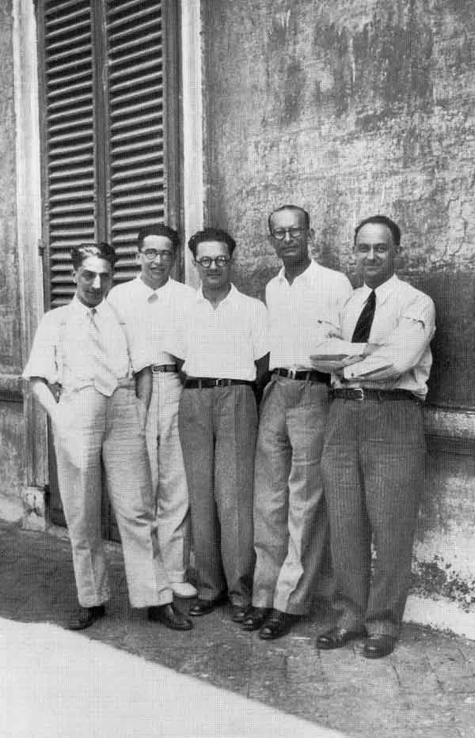
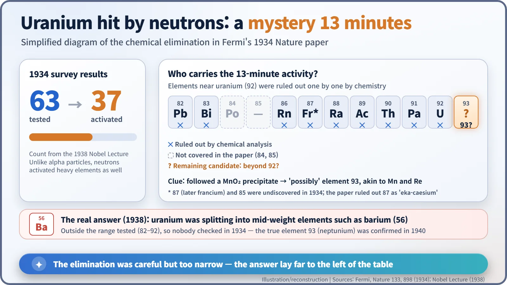
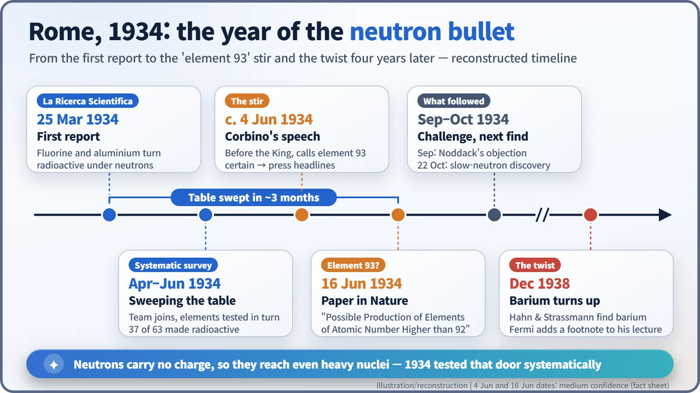
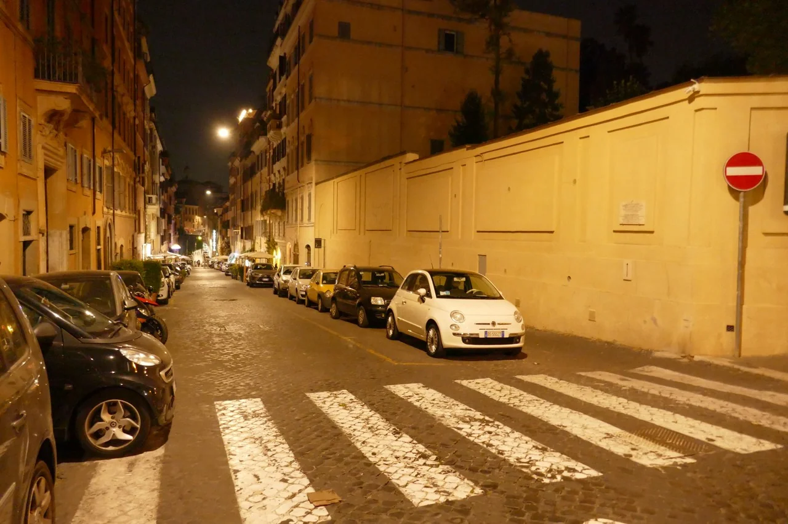

Nuclear History · 053
Bombard Them All — Fermi's Neutron Experiments in Rome (1934)
A team sprinting down a corridor made 37 of 63 elements radioactive, then stumbled on a 13-minute mystery in uranium that hid nuclear fission for four years.
In the spring of 1934, Enrico Fermi and his young team in Rome began bombarding element after element with neutrons, and found that 37 of the 63 they tested became radioactive. When they reached uranium, a mysterious 13-minute activity led them to suggest, cautiously, that they might have made element 93. The real answer, nuclear fission, would stay hidden for four more years.
A race down the corridor
Spring 1934, the Physics Institute of the University of Rome on Via Panisperna. A young physicist grabs a freshly irradiated scrap of metal at one end of a corridor and sprints to the other end, more than 25 metres away. Why the hurry? The radioactivity he had just created would fade within minutes, sometimes within seconds. And the neutron source and the radiation counter had to sit at opposite ends of the building, so that radiation from the source would not swamp the counter. The only link between them was a pair of legs. Edoardo Amaldi (1908–1989) later recalled days of 30 runs an hour for eleven hours straight. [6]
Why neutrons instead of alpha particles?
In January 1934, Irène and Frédéric Joliot-Curie in Paris had bombarded aluminium with alpha particles and made a radioactive element: artificial radioactivity. In Rome, the young theoretical physics professor Enrico Fermi (1901–1954) wondered whether alpha particles were the only possible bullets. As he put it in his Nobel Lecture, "α-particles very likely did not represent the only type of bombarding projectiles," so he "decided therefore to investigate… the effects of the bombardment with neutrons." [1]
The logic was simple. Alpha particles carry a positive charge, and so does every atomic nucleus, so the two repel each other. The heavier the element, the stronger that electric fence, and the more easily an alpha particle bounces off. A neutron has no charge at all. In Fermi's words, neutrons "can reach the nuclei of all atoms, without having to overcome the potential barrier."
The catch was the supply of bullets. Fermi's source was "a small glass bulb containing beryllium powder and radon." Even with up to 800 millicuries of radon it gave only about 2 × 10⁷ neutrons per second, a trickle compared with an accelerator. The radon came from Giulio Cesare Trabacchi, who ran the public-health physics laboratory in the same building and held a stock of radium. [1] [5]
One square of the periodic table at a time
On 25 March 1934, Fermi published a short letter in the Italian journal La Ricerca Scientifica: fluorine and aluminium had become radioactive after neutron bombardment. He had begun alone, but within weeks Amaldi, Emilio Segrè, Franco Rasetti and the chemist Oscar D'Agostino joined in, and later Bruno Pontecorvo. After the street address, they became known as the "Via Panisperna boys". [5]

The plan was exactly what the title says: take every element you can lay your hands on and bombard it in turn. Short-lived products had to be chemically analysed "in a time of the order of one minute," which is why the corridor dash became routine. Fermi's Nobel Lecture gives the tally: "Out of 63 elements investigated, 37 showed an easily detectable activity." The real surprise was that heavy elements became radioactive just as readily as light ones. With alpha particles, that had been out of reach. [1] [3]
There is a small twist in the story. Team members later remembered starting with hydrogen and working up through the light elements until fluorine finally responded. But according to the Enrico Fermi museum in Rome (Museo CREF), the surviving records show Fermi started with platinum, an element he had in the lab, and worked down the table. "In turn" was right; the direction, it seems, was not quite as they remembered. [6]
A mystery lasting 13 minutes
Things got tangled at element 92, uranium. Bombarded uranium produced several activities at once, with half-lives of "about 10 sec, 40 sec, 13 min" and more. When a nucleus swallows a neutron and then undergoes beta decay, its atomic number goes up by one. So had uranium turned into element 93, which does not occur in nature?
The team used chemical elimination. The 13-minute activity did not behave like uranium, protactinium, thorium, actinium, radium, radon, bismuth or lead, nor like the still-undiscovered element 87. Instead it came down with a manganese dioxide precipitate. As the paper noted, "If it were an element 93, it would be chemically homologous with manganese and rhenium." [2]

The paper, published in Nature in June 1934 (in the 16 June issue, according to standard bibliographies), carried a deliberately cautious title: "Possible Production of Elements of Atomic Number Higher than 92." The text said the negative results "suggest the possibility" of an atomic number above 92, and admitted that one key piece of evidence "cannot be considered as very strong." [2]
Caution did not survive contact with politics. The institute's director, Orso Mario Corbino, declared in a formal address before the King that the production of element 93 was, in his opinion, already established. Fermi's wife Laura later wrote: "The Fascist press announced the discovery without reservations, and newspapers in other countries divulged the news. The small outburst of incredulity among foreign scientists that ensued so upset Fermi that I never saw him as much troubled either before or later." [4]

Fission was already happening
We now know what was really going on. Some uranium nuclei, after absorbing a neutron, were splitting into two mid-weight elements such as barium: nuclear fission. The team had ruled out only the elements near uranium (82 to 92); the far left of the periodic table was never tested. The idea that a single neutron could break a heavy nucleus apart seemed absurd at the time. In September 1934 the chemist Ida Noddack pointed to exactly that possibility, but her suggestion attracted little attention.
When Otto Hahn and Fritz Strassmann found barium in December 1938, Fermi added a footnote to the printed version of his Nobel Lecture: the discovery "makes it necessary to reexamine all the problems of the transuranic elements, as many of them might be found to be products of a splitting of uranium." The genuine element 93, neptunium, was identified only in 1940. [1] [4]

Still, the Rome experiments were anything but wasted. They showed, element by element, that the neutron is a key that fits the lock of every nucleus. And that autumn the same team noticed something odd: their measurements changed depending on whether a sample sat on a wooden table or a marble one. That puzzle would surprise the world again, and it deserves a story of its own.